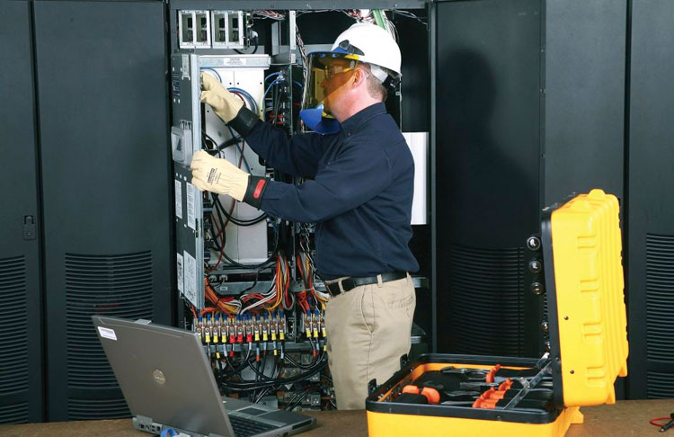
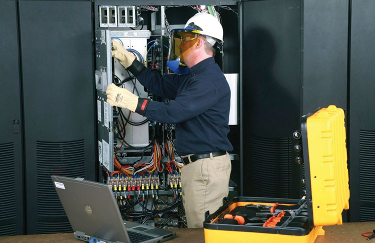

euler Redes Eléctricas de Media y Baja Tensión
"Ofrecemos servicios especializados en Redes Eléctricas de Media y Baja Tensión. Realizamos evaluaciones personalizadas, instalaciones, y mantenimiento de sistemas eléctricos. Cumpliendo con normativas y promoviendo la eficiencia energética, nuestro objetivo es garantizar la confiabilidad y seguridad de las redes eléctricas para comunidades y empresas. Contáctanos para soluciones eléctricas confiables!"


 
